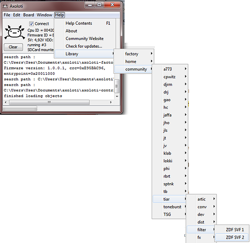

Table of contents
with links to posts.
Note: menu: Help -> Library -> Community -> tiar contains examples that may help you understand how to use the objects:

In most objects, I have developed variants of Differentiated Polynomial anti aliasing. These methods are CPU efficient and strongly reduce digital artefacts. The resulting waveforms are smooth and without Gibbs ringing. When a crisper sound is wanted I used Band Limited Impulses.
tiar/artic
* sentence1 Sort of "smart" note counter.
tiar/conv/
- O2_to_SR_59
Converts an oversampled audio signal to sample rate with a 59 tap filter (decimator).
Note: the oversampled signal consist of 2 interleaved sample rate signals. - O2_to_SR_Bellanger
A 19 tap decimator. - SR_to_O2_6
A x2 interpolator based on a 6 tap filter (better frequency response than linear interpolation between 2 samples).
tiar/disp/
- scope
An easy to use scope with improved sync (bandpass and zero crossing detection)
tiar/dist/
-
DPHardClip and DPSoftClip
A hard and a soft clipper. anti aliased by first order differentiated polynomial segments. -
SyncAlias
Low fi à la 8bit with a touch of sync...
tiar/filter/
-
Butt10
A tenth order brickwall filter to mimic early band limited digital synths. - dis lphp1 A non linear filter reminiscent of waveshapers found in early String machines.
-
ZDF SVF 1 A heavy duty filter capable of deep and fast modulations.
Based on "step invariant" transform. - ZDF SVF 2 A heavy duty filter capable of audio rate modulations.
tiar/fx/
- TripleVibrato
tiar/gain/
- DCA A very fast and declicked (zero crossing) amplifier.
tiar/kfilter
-
LPRiseDecay
It can be used to smooth control signals with distinct rising and falling rates.
I find it useful on midi signals such as aftertouch. -
median
This is a 3 tap median filter for noisy-spiky control signals. -
hyst
A hysteresis comparator (Schmitt trigger) useful for switch debouncing.
tiar/kfunc
- modulo A modulo function, useful to transform a range into segments or "synched" ramps.
- quant A quantification function, with controllable steps. Useful for old digi synth recration.
- segment objects A series of really handy segment functions.
tiar/lfo/
-
triphase_lfo and triphase_vlfo
A low and and a very low (cycle up to 64s) frequency oscillator. Each has three sine outputs in triphase. - 555LFOMimics waveforms found in some analog effects LFOs.
tiar/math/
-
tiar/math/DP *
This is an anti aliased ring modulator.
tiar/noise/
* Geiger
tiar/osc/
6coseg and 6coseg m
The waveform is made of 6 half cosine segments. 6 levels and 3 duty cycle ratios control the waveform. It is capable of sort of phase distortion sounds.coseg sqr
A low CPU and antialiased square wave generator with PWM and brilliance control.SelfPM
This low CPU oscillator generates bandlimited saw-ish and squar-ish waveforms. The bandwidth can be modulated.SelfPMSync Includes a master oscillator for sync effects.
DevilSync A special waveform with embedded master osc for evil sync sounds. First order DPW anti aliasing.
*KWSync A variation of the DevilSync. First order DPW anti aliasing.
DP2Saw and DP2PWM
A saw oscillator and a PWM oscillator. Anti aliasing by second order differentiated polynomials.DP2SawPls and DP2Pulsaw
These oscillators waveforms are intermediate between saw and pulses. The first harmonics are stronger than the usual saw oscillators. Anti aliasing by second order differentiated polynomials.-
Steps/SixSteps and SixStepsBLI
These oscillators are reminiscent of old pseudo digital synths.Steps/**SixSteps** is anti aliased by second order differentiated polynomials -> smoother sounds, no ringing, better if used in distortions.
- Steps/**SixStepsBLI** is anti aliased by band limited impulses -> brighter sounds, Gibbs ringing, beware of artefacts in distortions.
Steps/SixStepsSync and SixStepsBLISync
These include a master and slave osc scheme to recreate hard sync sounds. Try the help patches to get an idea .
.Steps/SixStepsBLIV1 and SixStepsBLIV2
A hint of imperfection for a more "brassy" sound
- Steps/FiveSteps and Steps/SevenSteps
These oscillators waveforms consists of five and seven steps.
The main interest of each is there particular and distinctive sound caused by the absence of harmonic 5 for the first and harmonic 7 for the second.
They particularly blend well with each other as detuned oscillators.
The 12Steps series of oscillators and the wf_12 companion objects
wf12/O2_12StepsSync and wf_12Steps, wf_12Harm and wf_12Bank
O2_12StepsSync is a twelve step oscillator with master / slave units.
The waveform is provided by one of its companion objects wf_12Steps, wf_12Harm or wf_12Bank.wf12/12StepsBLISync
12StepsBLISync is a twelve step oscillator with master / slave units (like O2_12StepsSync).
It is antialiased with Band Limited Impulses that guaranties brightness and anti-aliasing even at high pitches.
The waveform is provided by one of its companion objects wf_12Steps, wf_12Harm or wf_12Bank.wf12/12StepsBLI
It is similar to 12StepsBLISync but without the master/slave sync facility.wf12/wf_12Chorus
This object manipulates a wf_12 before it gets used by a 12Steps oscillator. The processing modulates the waveform to create sort of chorus.wf12/wf_12Scale
This object dynamically time scales a wf_12 before it gets used by a 12Steps oscillator. The resulting effect can be surprising.
The 16StepsDP2 oscillator and the wf_16 companion objects
- wf16/16StepsDP2
It is an anti aliased oscillator based on 16 segments waveforms.
The trick is that the segments do not need to be "connected". The end of a segment do not need to match the start of another: discontinuities are allowed and the add a bunch of harmonics ! wf16/wf_16Steps
This object allows to create a 16-step-discontinuous waveform to be used by 16StepsDP2wf16/wf_16BankPwr
is a bank of 16 predefined waveforms. These waveforms may seem strange at first sight, but they have quite useful spectra for substractive synthesis and are crest factor optimised.
- wf16/wf_16_harm
8 harmonics + interpolation mode (revert -> steps -> linear).
Oscs In dev...
Wave3b
A complex wave generator with anti aliased phase modulation.Osc Bnk I
A paraphonic oscillator bank with a wide choice of waveform. Designed for String machines (re)creation.
- Osc_Bnk_I_lock
A paraphonic oscillator bank with a wide choice of waveform. Designed for String machines (re)creation. The octave related notes are phase locked.
tiar/schedule
Schedulers are trig units that allows sub krate schedule of lengthy operations such as DP2 pre integration. Use outputs with "update" inputs of modules.
- sc4
A 4 step cyclic scheduler.
tiar/spat
* pan m: A pan with constant gain^2 law.
tiar/tuning
-
DetHz
A frequency detuner - as opposed to pitch detune - to get consistent doubling of osc all over the keyboard. - DetHzLH
Frequency detuner with settings for low, mid and high notes. - Exact5th
Allows to retune to exact 5ths instead of exact 8ves.

 Ill take a look at some of the MI objects
Ill take a look at some of the MI objects  Technical details:
Technical details: